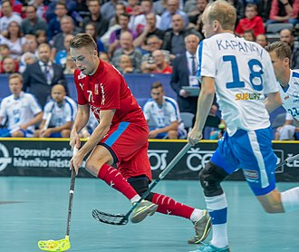
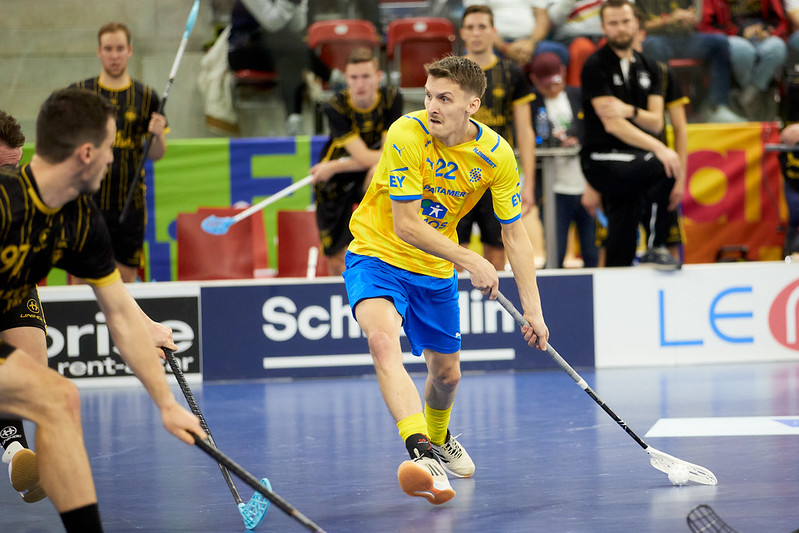
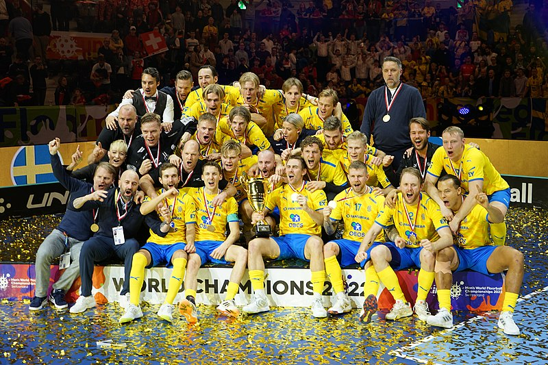

What is Floorball
Floorball is a team sport played on a field with an artificial surface, where two teams try to score the ball into the goal using light sticks. It is popular for its speed, dynamism and easy accessibility, making it a popular leisure activity for all age groups.
My Experience in this sport
I used to play floorball when I was in elementary school. We had practice every week on Thursdays. On weekends we played games in a tournament and won a few times. I really enjoyed this sport a lot, but then other responsibilities came and there was no time for sports.
The best team
The best floorball team in the world is often considered to be the Swedish national team, which regularly ranks at the top of international tournaments and championships. Their achievements include several world championship titles, demonstrating their superior skill, strategy and team spirit.